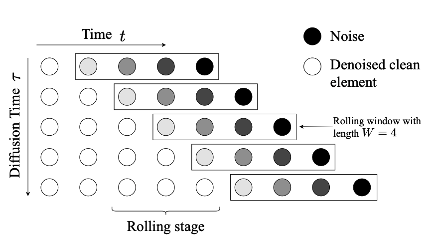
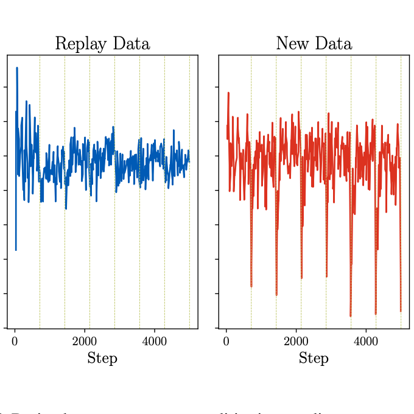
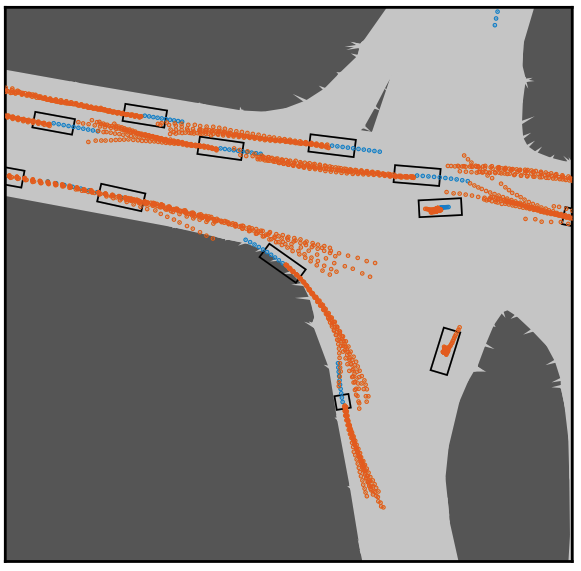
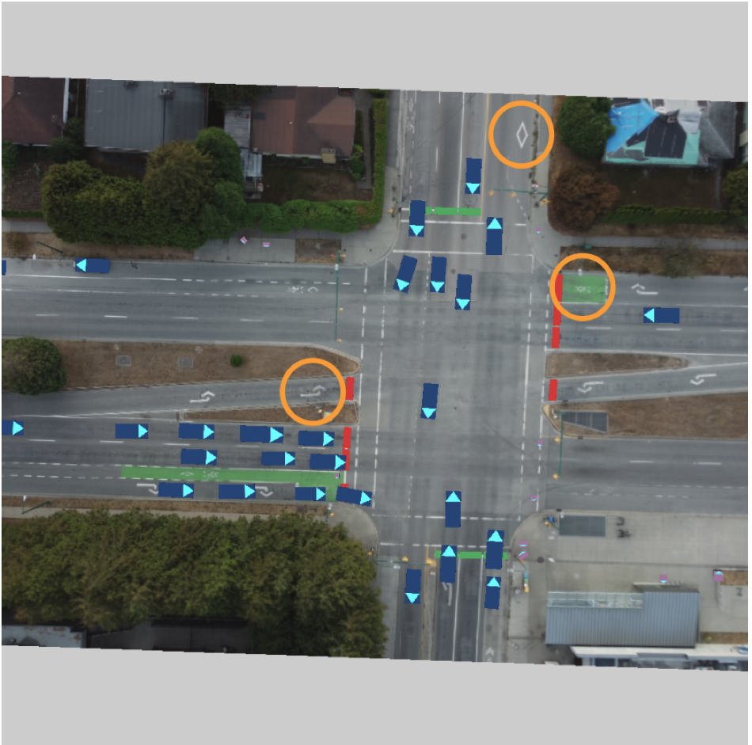

|
Yunpeng(Larry) Liu
I'm a fourth-year PhD student at University of British Columbia, where I'm advised by Frank Wood. I'm also an Mitacs intern at Invereted AI, where we are working on advancing autonomous driving with generative models.
Previously, I completed my Bachelor of Applied Science in Electrical and Computer Engineering at the University of British Columbia.
My research focuses on autonomous driving with generative models like diffusion models, modelling realistic mult-agent behaviors and reasoning about the world.
Email /
Scholar /
LinkedIn /
Github
|
|
|

|
Rolling Ahead Diffusion for Traffic Scene Simulation
Yunpeng Liu,
Matthew Niedoba,
William Harvey,
Adam Scibior,
Berend Zwartsenberg,
Frank Wood
Workshop on Machine Learning for
Autonomous Driving at AAAI, 2025
arXiv
Diffusion models based closed-loop autoregressive multi-agent traffic scene simulation.
|
|

|
Layerwise Proximal Replay: A Proximal Point Method for Online Continual Learning
Jason Yoo, Yunpeng Liu, Frank Wood, Geoff Pleiss
ICML 2024
[Paper]
Improving online continual learning performance by optimizing the experience replay loss in a way that stabilizes neural network representations between parameter updates.
|
|

|
A diffusion-model of joint interactive navigation
Matthew Niedoba, Jonathan Lavington, Yunpeng Liu, Vasileios Lioutas, Justice Sefas, Xiaoxuan Liang, Dylan Green, Setareh Dabiri, Berend Zwartsenberg, Adam Scibior, Frank Wood
Neurips 2023
[Paper]
A Diffusion model based method of generating traffic scenarios (DJINN). we demonstrate how DJINN flexibly enables direct test-time
sampling from a variety of valuable conditional distributions including goal-based
sampling, behavior-class sampling, and scenario editing.
|
|

|
Video Killed the HD-Map: Predicting Multi-Agent Behavior Directly From Aerial Images
Yunpeng Liu, Vasileios Lioutas, Jonathan Wilder Lavington, Matthew Niedoba, Justice Sefas, Setareh Dabiri, Dylan Green, Xiaoxuan Liang, Berend Zwartsenberg, Adam Ścibior, Frank Wood
ITSC 2023
[Paper]
Existing multi-agent behavioral models rely on manually annotated HD maps which is expensive and time-consuming. We propose an aerial image-based map representation that requires minimal annotation and provides rich road context information for traffic agents like pedestrians and vehicles.
|
|
{kind=link}